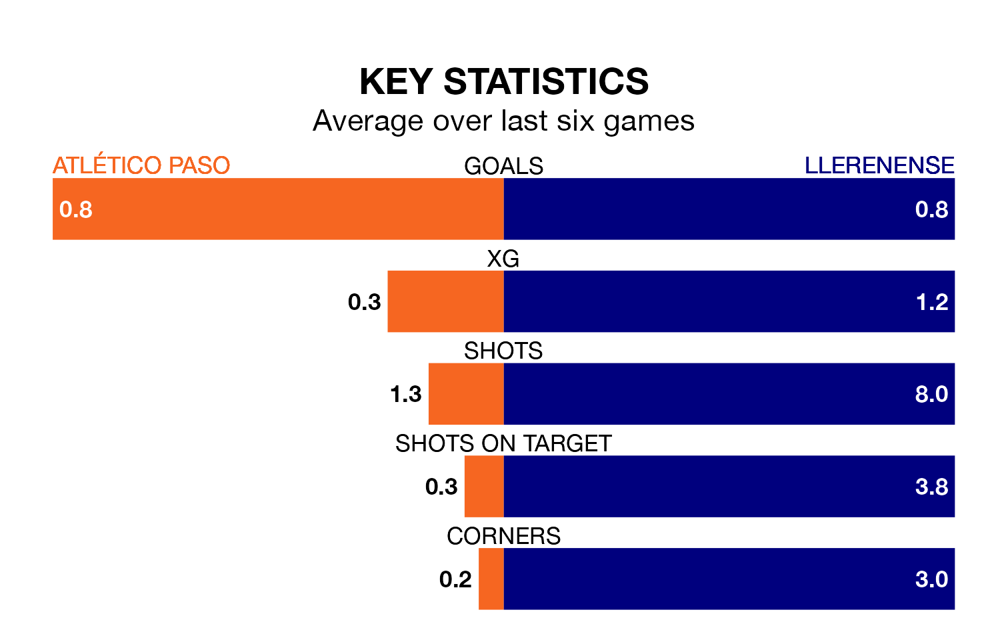

Llerenense face Atlético Paso on Sunday seeking to protect their long unbeaten run in Segunda División RFEF Group 5.
Llerenense are unbeaten in seven, with four wins and three draws, ahead of the 12pm kick-off.
They face an Atlético Paso team who have won three and drawn three over the same number of games.
Atlético Paso are fifth in the table after 17 games, of which they have won seven and drawn seven, earning 28 points.
Llerenense are three places behind the hosts in eighth, with seven wins and five draws putting them on 26 points.
With 14 goals in 17 games so far this season, Atlético Paso are the league's joint-third-lowest scorers with 0.8 goals per game. But they are conceding fewer than average too, letting in eight goals at a rate of 0.5 per game.
The away side are also below average scorers, with 1.0 goal per game, compared to a league average of 1.1. They have also conceded 1.0 goal per game.
Atlético Paso's last match was on January 7, a 2-1 win against Montijo.
Llerenense beat CD Badajoz 2-1 last time out, also on Sunday.
Updated: 15:34, 08/01/24